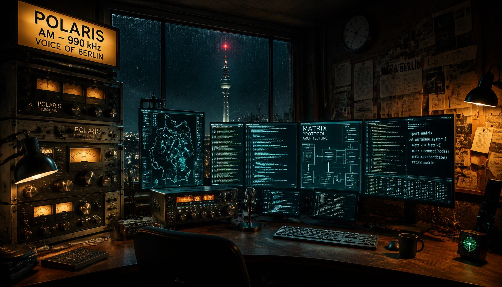

Die Digitalisierung unserer Städte hat sich in eine Sackgasse aus teuren Software-Abonnements und komplizierter Bundesbürokratie manövriert. POLARIS bricht diese Abhängigkeiten von globalen IT-Monopolen auf. Auf Basis des weltweit etablierten, sicheren Matrix-Protokolls errichten wir einen dezentralen Verbund von Gemeindenetzwerken für den Bürger.
POLARIS ist vollständig transparent und gemeinfrei. Unter der Schirmherrschaft von eZiner stehen alle Konzepte und technischen Komponenten im Sinne der öffentlichen Daseinsvorsorge frei zur Nachnutzung bereit.
Enthält die vollständige theoretische Dokumentation, die empirische Analyse kommunaler IT-Haushalte sowie politische Beschlussvorlagen für den Stadtrat.
Der fertige Python-Code-Prototyp. Ermöglicht es Servern, mobile Bürger und Autofahrer via Live-Standort (Beacons) vollautomatisch und datenschutzkonform in regionale Chat-Zellen hinein- und herauszuführen.